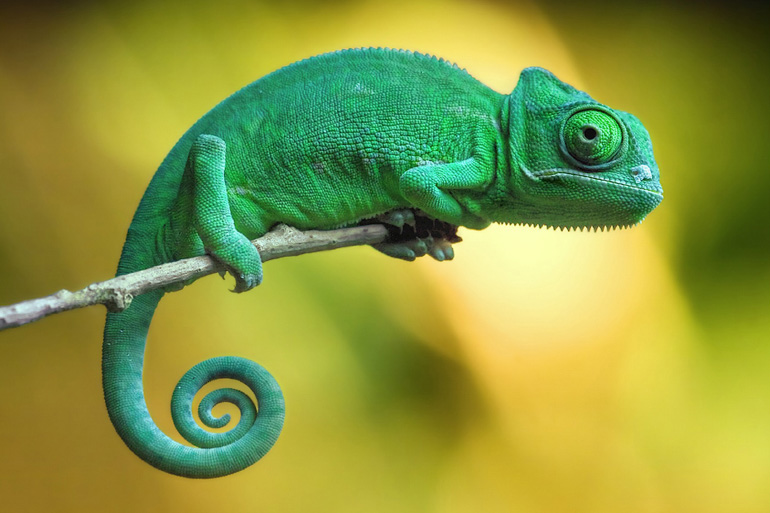
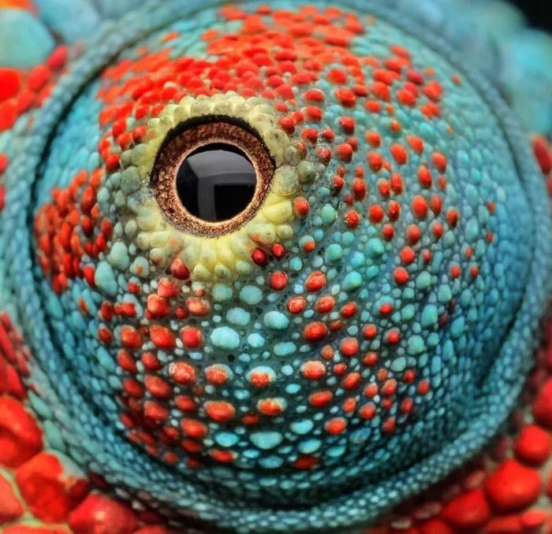
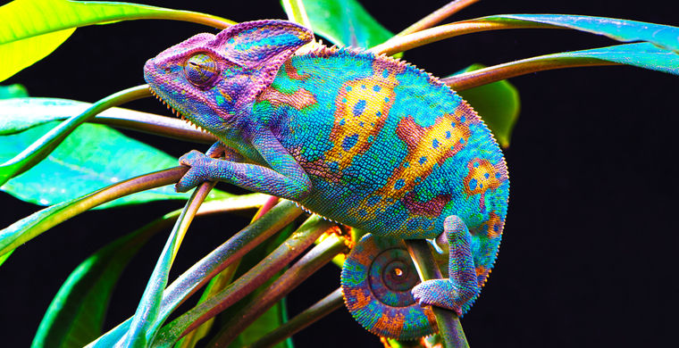
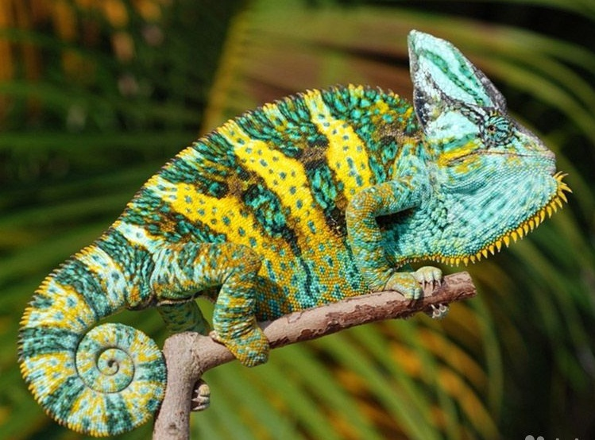

Хамелеоны
Большинство видов имеет длину тела 30 см, наиболее крупные достигают 50-60 см, самые мелкие — 3-5 см. Голова шлемообразная, с заметно приподнятой затылочной областью. Часто украшена более или менее выпуклыми гребнями, буграми или вытянутыми, заострёнными рогами. В большинстве случаев все эти образования развиты у самцов, а у самок носят зачаточные формы. Ноги длинные, своеобразно приспособленные к лазанью. Пальцы срастаются в две противополагающиеся друг другу группы по 2 и 3 и имеют вид «клешней», которые могут плотно обхватывать ветви дерева. Хвост толстый у основания, постепенно сужается к концу, может спирально закручиваться вниз и обвиваться вокруг ветвей. Данной способностью обладают большинство представителей семейства за исключением сравнительно небольшого числа видов с коротким хвостом.

Хамелеоны имеют необычные органы зрения. Веки животных сросшиеся, постоянно покрывающие глаз, но имеющие отверстие для зрачка. Движения левого и правого глаза могут осуществляться несогласованно, что имеет важное значение при ловле насекомых, но перед атакой хамелеон поворачивает оба глаза на добычу. Хамелеоны обладают круговым обзором.

Во время охоты хамелеоны, как правило, длительное время сидят на ветвях деревьев. Тело животного при этом остаётся неподвижным, а глаза постоянно двигаются. Насекомых ловят языком с ловчей присоской на конце, процесс выбрасывания которого длится около 1/20 секунды, а вместе с возвратом в исходное положение — не более полусекунды. За три секунды хамелеон может распознать и поймать до четырёх насекомых. В «нерабочем» положении язык удерживается специальной косточкой в нижней челюсти. Иногда добыча оказывается слишком тяжёлой, чтобы удержаться языком; в последующие разы хамелеон хватает добычу такого размера ртом.

Широкую известность имеет свойственная всем хамелеонам способность изменять окраску и рисунок тела. Изменение окраски связано с особенностями строения кожного покрова. В результате этого окраска хамелеонов может быстро изменяться от светлой — беловатой и оранжевой, через жёлтую и зелёную до пурпурной, а затем — полностью чёрной или тёмно-коричневой. Данные изменения окраски могут происходить как на всём теле животного, так и на его отдельных участках, сопровождаясь появлением и исчезновением различного рода полос и пятен. Данные изменения окраски тела хамелеонов происходят под действием как внешних раздражителей — температуры, света и влажности, так и в результате голода, жажды, испуга, раздражения и т. д. Доступные хамелеону цветовые вариации зависят от преимущественной среды обитания, характерной для вида. Хамелеоны ведут дневной образ жизни, так как во сне они теряют контроль над цветом кожи, бледнеют и становятся заметными для хищников. Часто изменения окраски могут сочетаться с демонстрацией угрозы, направленной на отпугивание врага. Быстрые изменения окраски также наблюдаются у самцов в период размножения. Традиционно считалось, что хамелеоны изменяют окраску тела для мимикрии под окружающую их растительность. Исследуя пёстрого горного хамелеона , обитающего в Северной Африке, учёные пришли к выводу, что хамелеоны используют изменение цвета в первую очередь для коммуникации с представителями своего вида, а не для защиты от хищников.

Хамелеоны прежде всего встречаются в материковой части Африки южнее Сахары и на острове Мадагаскар, хотя некоторые виды встречаются также в Северной Африке, Южной Европе, на Ближнем Востоке, в Южной Индии, Шри-Ланке и ряде мелких островов в западной части Индийского океана. Есть представители диких популяций на Гавайях и были зарегистрированы в Калифорнии и Флориде. Хамелеоны обитают во всех видах тропических лесов, саваннах, а иногда и пустынях, и степях. «Типичный» хамелеон из подсемейства Chamaeleoninae обычно находится на деревьях или кустарниках, хотя некоторые (в частности Намаква) частично или в значительной степени наземные. Большинство видов из подсемейства Brookesiinae живут в низкой растительности или на земле.